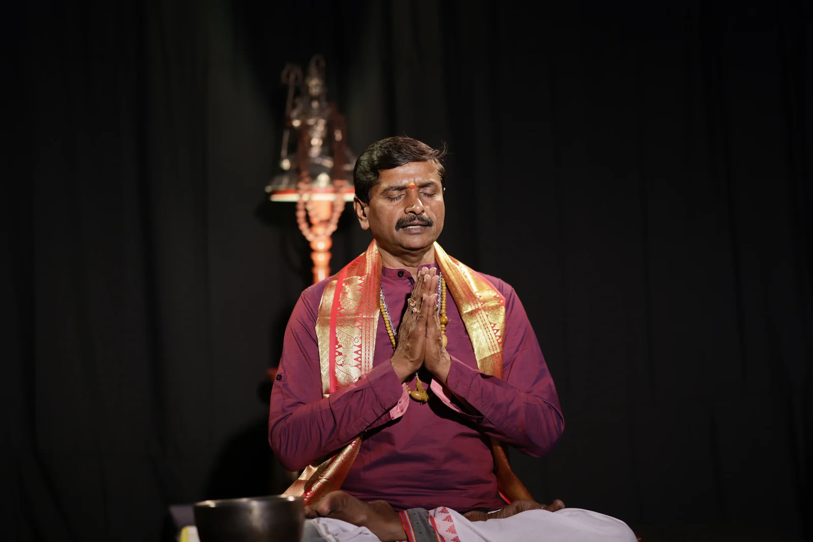
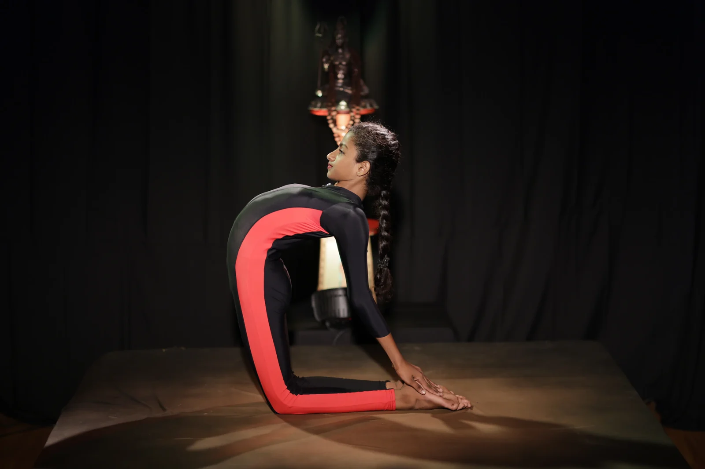
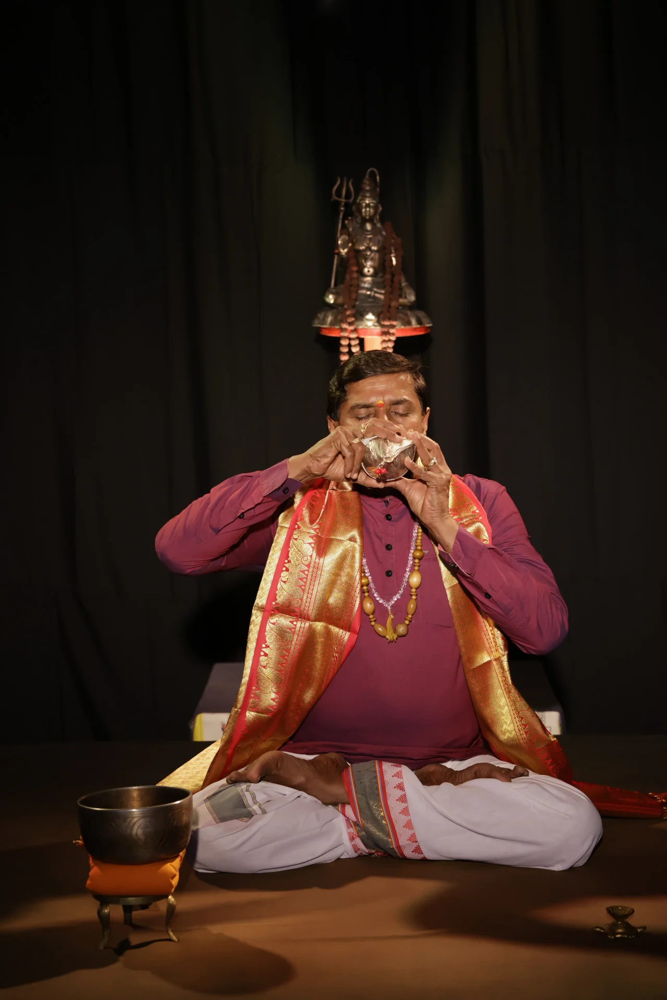
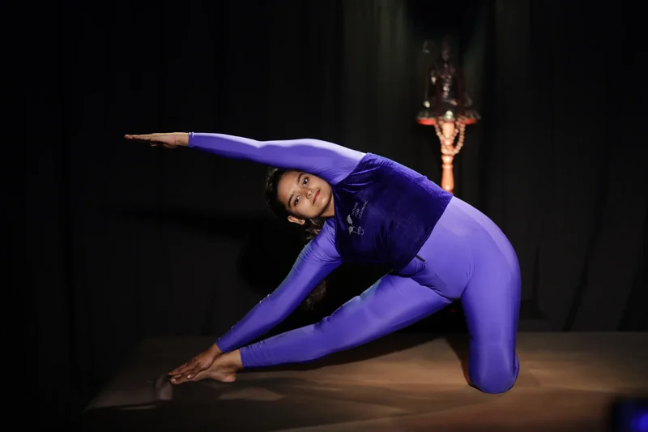
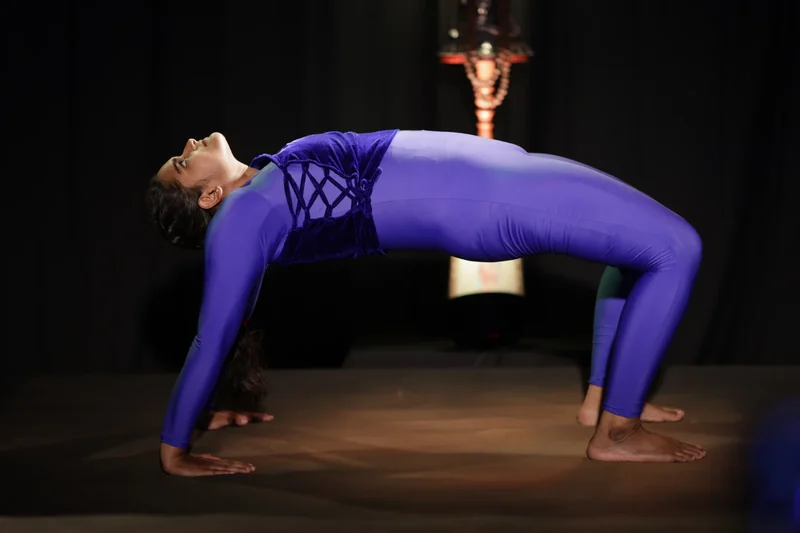
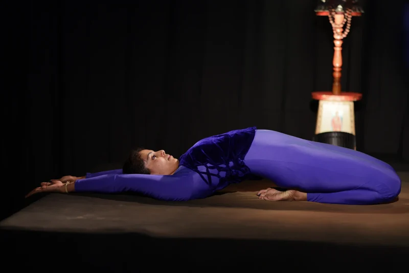
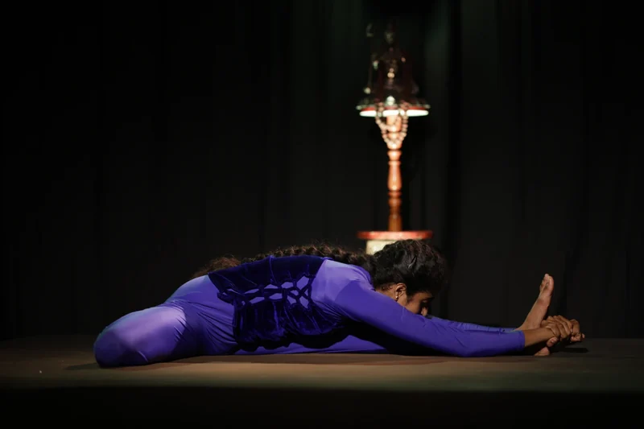
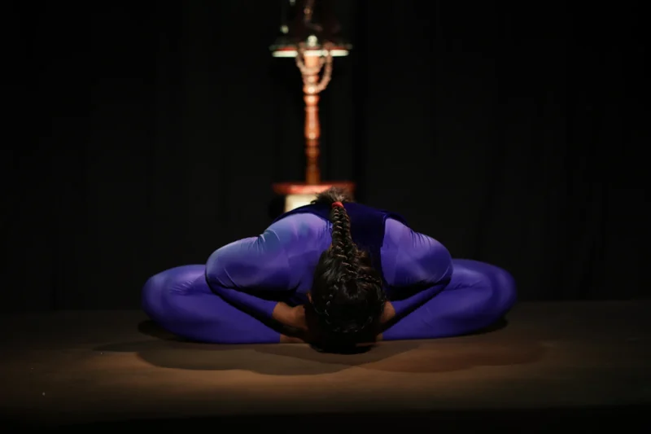
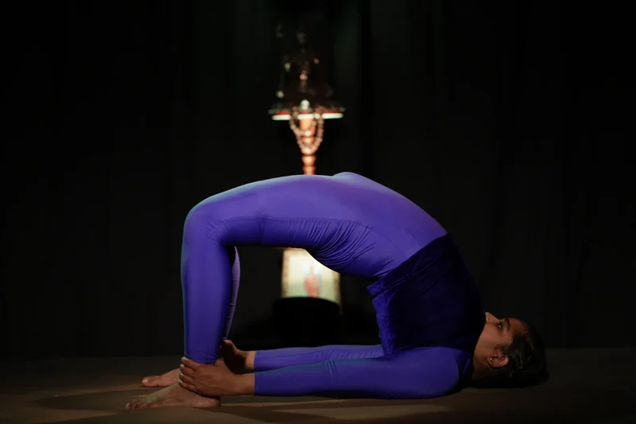
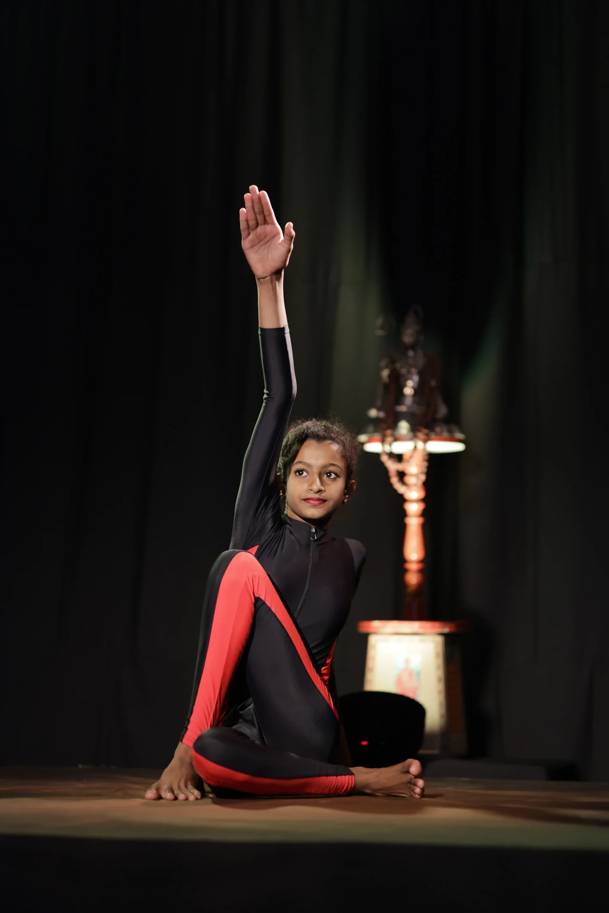

Yoga for life
Surya Practice Studio
A short daily practice from the Indian yoga tradition. Choose a guide, press Start, and move with the breath.
Yogah karmasu kaushalam
Begin
In stillness, before movement
Every practice opens with a pause: hands together, breath settling, attention arriving.

Breath and sound
Practice that starts with listening
Traditional openings, a singing bowl, a slow count of breath. Calm music rises as you breathe in and settles as you breathe out.

In the studio
Poses, as practised






How yoga came to us
A personal practice, a personal view
The practice of yoga is personal. Everything in this chapter is shared as a personal view. Other teachers and traditions may teach it differently.
It is shared for education and well-being. It is not medical advice and does not replace a qualified teacher or doctor.
Your teachers

Daily basics, for everyone: breathe, water, rest, stress, lifestyle
Still images: turn the dial clockwise for the next step, anticlockwise to go back, or use the arrow keys, a mouse wheel or a remote. Go at your own pace with the picture on screen. Smartwatch crown control is planned for our own app.
Your practice track
Yoga is shared here as a science of body, breath and mind that anyone can practise. The universal track is the default. Spiritual content is optional.
Traditional chants (optional)
Our own transliteration and English meaning. Listen uses your device's own voice.
Pose library
Advanced poses (teacher-led only)
A gallery of names only, with no steps. Learn these only in person with a qualified teacher, after years of regular practice. Not shown to children or in the beginner paths.
Sign in to continue
These lessons explain the body from a clinical point of view, for health and well-being, using plain textbook drawings. They are for members aged 18 and over, or younger learners with a parent or guardian beside them.
Not a member yet? Membership is open to everyone, from $5 a year for eligible people.
Before you use these lessons
- Health-science education for well-being and self-care. Not medical advice, diagnosis or treatment. See a qualified doctor about any personal concern.
- Lessons follow the laws and customs of the member's country, including the UAE and India. Some lessons may not show in some regions or for younger learners.
- Code of conduct: respectful, educational use only. No copying, sharing or reposting. Accounts that misuse lessons are closed.
- Every view carries your member ID and the time as a watermark.
Terms of use (summary)
Lessons are for personal learning by signed-in members. All drawings and words belong to the House for Learning group. You may not copy, record, print or share them. We may change or remove lessons at any time. Use is at your own risk; practise within your limits and follow your doctor's advice. Full terms will be reviewed by our lawyers before launch.
Six-week beginner course
The eight limbs beside Maslow and Bloom
Long before modern psychology, the Yoga Sutras described growth as a path of steps, from how we live with others to complete inner stillness. Two well-known modern models also describe growth in steps. Tap any level to see where the ideas echo each other.
Parallels, not proof. There is no evidence that Maslow or Bloom drew on the Yoga Sutras. We place them side by side as a learning aid, to compare ideas across time and cultures.
Key differences
- Order. Maslow starts with the body. The Sutras start with ethics, then the body.
- Steps or all together. Maslow said needs overlap rather than unlock one by one. The Sutras call them limbs because they grow together, like the limbs of one body.
- Aim. Maslow describes motivation and Bloom describes learning goals. The Sutras describe a path to a still, clear mind (sutra 1.2).
- The picture. Maslow never drew a pyramid himself; others added it later. Bloom's 2001 revision turned the levels into verbs and put creating at the top.
Sources
- Patanjali, Yoga Sutras. The eight limbs are listed in sutra 2.29 and explained from 2.30 to 3.3. Usually dated between about 200 BCE and 400 CE; free public-domain translations exist.
- Maslow, A. H. (1943). A theory of human motivation. Psychological Review, 50(4), 370 to 396.
- Maslow, A. H. (1954). Motivation and Personality. Harper.
- Maslow, A. H. (1969). The farther reaches of human nature. Journal of Transpersonal Psychology, 1(1), 1 to 9.
- Koltko-Rivera, M. E. (2006). Rediscovering the later version of Maslow's hierarchy of needs. Review of General Psychology, 10(4), 302 to 317.
- Kenrick, D. T., Griskevicius, V., Neuberg, S. L., and Schaller, M. (2010). Renovating the pyramid of needs. Perspectives on Psychological Science, 5(3), 292 to 314.
- Bloom, B. S. (Ed.) (1956). Taxonomy of Educational Objectives, Handbook I: Cognitive Domain. David McKay.
- Anderson, L. W., and Krathwohl, D. R. (Eds.) (2001). A Taxonomy for Learning, Teaching, and Assessing. Longman.
Stay safe
- This is general wellness education, not medical advice. Ask your doctor or a qualified health professional before you begin, and take extra care if you are pregnant, older, or live with a long-term or recurring condition, such as a heart, blood pressure, back, knee or eye condition, or after recent surgery.
- Do not practise after drinking alcohol or taking recreational drugs, or with medicines that make you drowsy.
- Stop if anything hurts. Mild stretch is fine. Pain, strong discomfort, dizziness or breathlessness means stop and rest, and get medical advice if it does not pass.
- Never force the breath. Breathe through the nose, slow and smooth.
- Seniors and beginners: start with the Chair level. Keep a wall or chair close for balance.
- Practise on an empty stomach, on a non-slip mat, ideally at sunrise or sunset.
Your practice
Saved on this device only. Sign in to keep it in your private member area.
Your lifelong path
- Seed, weeks 1 to 2. 2 rounds Gentle or Chair, then 3 AUM chants.
- Sprout, weeks 3 to 6. 4 rounds Steady, plus 6 rounds of alternate nostril breathing.
- Tree, months 2 to 6. 6 rounds at sunrise, then AUM and breathing.
- Banyan, for life. 12 rounds, mantras chanted, one quiet minute after.
Move up only when the current stage feels easy for a full week.
Your artists' photos and videos
- Slots are ready beside every pose card and every Sun salutation step.
- Each artist signs a model release before any photo or video is used.
- Videos are trimmed, compressed and captioned, then get a voiceover and the music layer each member chooses.
Fair fee
- Basic practice on this page is included for $5-a-year members.
- Extras, such as artist video classes and music packs, are pay as you go: cost plus admin, tax and upkeep, with no other profit.
- The price shows before you pay. No hidden auto-renew. Cancel in one click.
Payments are made only in the member area, by UPI or bank transfer, with the full price shown before you pay.